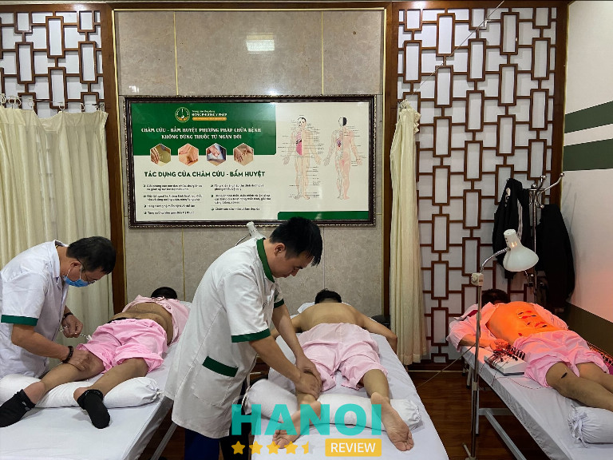
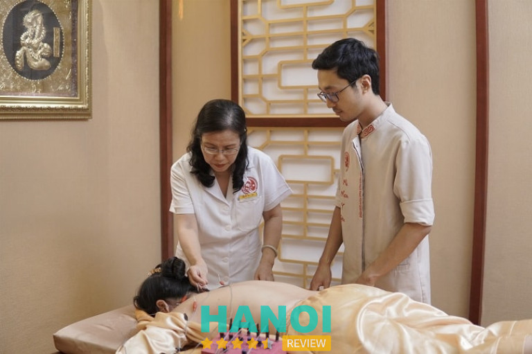
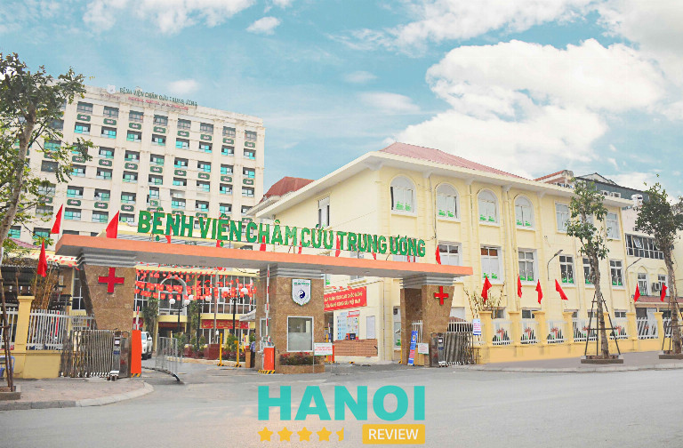
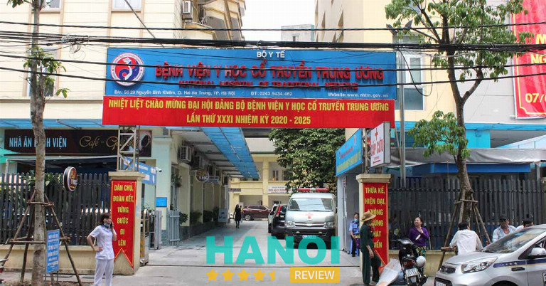
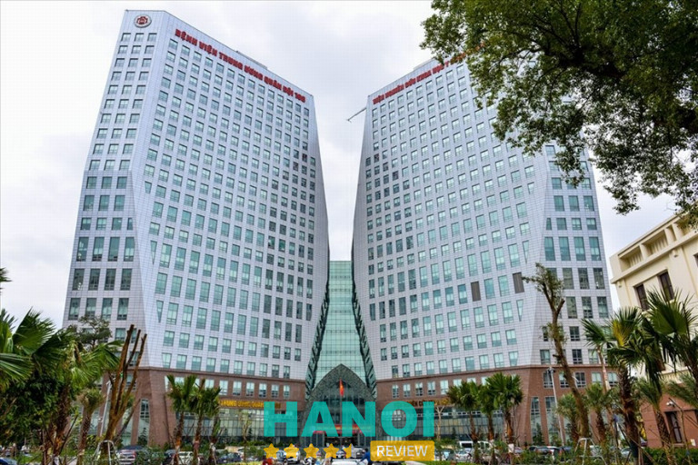
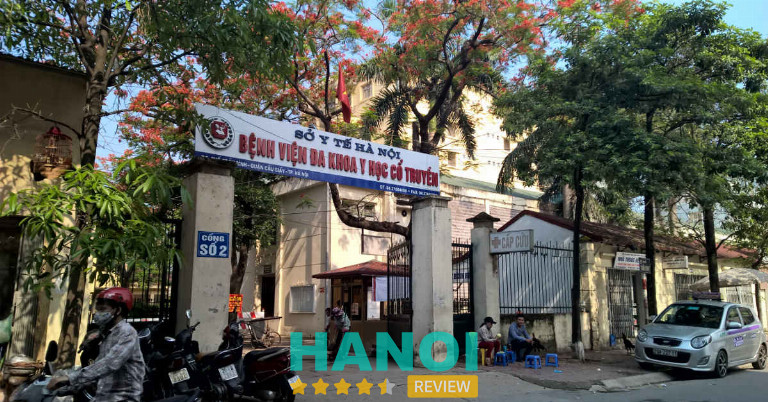
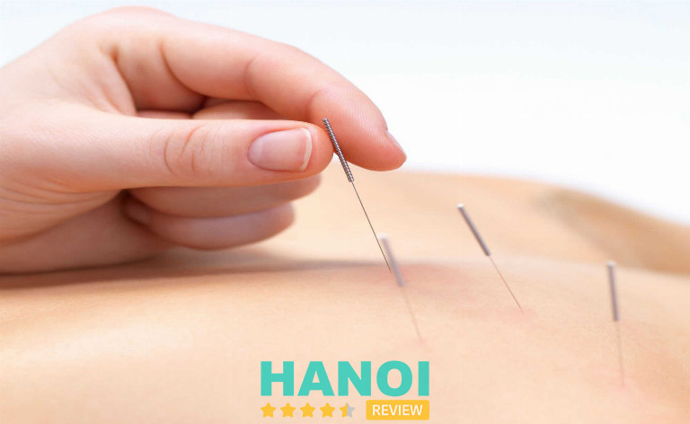

10 Địa chỉ châm cứu bấm huyệt tại Hà Nội uy tín, bác sĩ giàu kinh nghiệm
Cơ thể nhức mỏi và bạn đang tìm kiếm một cơ sở châm cứu bấm huyệt tại Hà Nội uy tín, bác sĩ kinh nghiệm để kịp thời chữa trị, nhưng còn lăn tăn chưa biết chọn cơ sở nào thì có thể cân nhắc một vài trung tâm chuyên cung cấp dịch vụ này được giới thiệu trong bài viết sau.
Top 10 Địa chỉ châm cứu bấm huyệt tại Hà Nội uy tín nhất
Ngày nay, bên cạnh các phương pháp chữa bệnh bằng Tây y, nhiều người lựa chọn châm cứu, xoa bóp bấm huyệt,… để giảm đau nhức cơ thể, tăng cường tuần hoàn máu, trị dứt điểm bệnh xương khớp,…
Tuy nhiên, với số lượng trung tâm có dịch vụ châm cứu, bấm huyệt hiện nay trong thành phố, không dễ gì để chọn ra một phòng khám có các bác sĩ chuyên môn giỏi. Hãy tham khảo danh sách 10 địa chỉ xoa bóp bấm huyệt, châm cứu uy tín hàng đầu được tổng hợp trong bài viết dưới đây.
Trung tâm Ứng dụng Đông phương Y pháp
Thành lập và hoạt động từ năm 2015, Đông Phương Y Pháp cung cấp dịch vụ thăm khám, chữa bệnh bằng phương pháp y học cổ truyền như xoa bóp, bấm huyệt, châm cứu, cấy chỉ,… Sau nhiều năm phát triển, trung tâm ngày càng mở rộng lĩnh vực hoạt động, kết hợp thêm y học hiện đại vào phương pháp vật lý trị liệu, phục hồi chức năng, để cải thiện hiệu quả chữa trị chuyên sâu, toàn diện nhất.

Các phương pháp như: châm cứu, xoa bóp, bấm huyệt, cứu ngải, giác hơi, bùn cứu, thủy châm, điện xung, nhiệt/thủy trị liệu, tập vận động trong vật lý trị liệu, phục hồi chức năng, nhằm điều trị các bệnh lý:
- Thoát vị đĩa đệm, thoái hóa cột sống, thoái hóa khớp, đau dây thần kinh tọa, đau vai gáy,…
- Đau dạ dày, viêm đại tràng mãn tính, trào ngược dạ dày,…
- Viêm xoang, viêm mũi dị ứng, hen phế quản, suyễn,…
- Liệt dây thần kinh số 7 ngoại biên,
- Mất ngủ, căng thẳng, đau đầu kéo dài…
- Cấy chỉ giảm béo
- Phục hồi chức năng hậu phẫu, sau tai biến, đột quỵ,…
Kết hợp với sử dụng các bài thuốc y học cổ truyền, hay trị liệu bằng âm nhạc, vận động, thảo dược, chế độ dinh dưỡng nhằm nâng cao hiệu quả chữa trị cho bệnh nhân, tối ưu hóa thời gian điều trị bệnh, tiết kiệm chi phí.
Đội ngũ bác sĩ, chuyên gia ở đây đều là những bác sĩ y học cổ truyền gạo cội, am hiểu sâu rộng về bệnh lý và huyệt đạo. Họ đều được chữa trị cho bệnh nhân với tất cả sự chân thành, với y đức cao quý của một bác sĩ. Họ đã chữa khỏi cho hàng ngàn bệnh nhân trên khắp Việt Nam nói chung và khu vực Hà Nội nói riêng.
- TTƯT, Bs Doãn Hồng Phương: Nguyên Phó trưởng khoa Nội tại Bệnh viện Châm cứu Trung ương, hiện là Giám đốc Chuyên môn tại Trung tâm Đông Phương Y Pháp.
- TTƯT. Bs Lê Hữu Tuấn: Nguyên Phó Giám đốc chuyên môn Bệnh viện YHCT Trung ương, hiện là Phó Giám đốc Chuyên môn tại Trung tâm Đông Phương Y Pháp.
- BS CK Trần Thị Hương Lan: Phó trưởng khoa Khoa Nội nội Cơ xương khớp tại Viện Y dược học dân tộc, hiện là Giám đốc Chuyên môn tại Trung tâm Đông Phương Y Pháp cơ sở miền Nam.
Ngoài ra, cơ sở rất tâm huyết trong việc đầu tư máy móc, thiết bị hiện đại, công nghệ tân tiến; các phòng chức năng được thiết kế thoáng đãng, đầy đủ tiện ích. Mỗi bệnh nhân một bộ dụng cụ riêng, không dùng chung; kim châm luôn được khử trùng sạch sẽ, đảm bảo an toàn cho người bệnh, tránh tình trạng lây nhiễm chéo.
Quy trình châm cứu, bấm huyệt, cấy chỉ luôn được thực hiện chỉ sau khi đã sát trùng, khử khuẩn bộ dụng cụ, đáp ứng tiêu chuẩn do Bộ Y tế đề ra. Ứng dụng mô hình 1 bác sĩ – 1 bệnh nhân, giúp bệnh nhân được chữa trị và chăm sóc một cách tốt nhất.
Liệu trình điều trị được cá nhân hóa, xây dựng theo từng tình trạng bệnh, theo từng đối tượng. Trung tâm hướng đến cơ chế tự chữa lành thông qua tác động vào huyệt đạo, không dùng thuốc. Qua đó, kích thích tuần hoàn, khí huyết được lưu thông, sản sinh kháng thể tự nhiên, đánh bay bệnh tật, phục hồi từ bên trong, tránh tái lại.
Thông tin liên hệ:
- Địa chỉ: Biệt thự B31, Ngõ 70 Nguyễn Thị Định, Q. Thanh Xuân, TP. Hà Nội
- Điện thoại: 0974.573.434
- Email: dongphuongyphap@gmail.com
- Website: dongphuongyphap.net
- Fanpage: FB.com/dongphuongyphap.tdt
Nhất Nam Y Viện
Nhất Nam Y Viện là một phòng khám y học cổ truyền uy tín tại Hà Nội, chuyên cung cấp các dịch vụ châm cứu, bấm huyệt chất lượng, đem lại hiệu quả cao trong việc điều trị và cải thiện sức khỏe. Được thành lập với sứ mệnh gìn giữ và phát huy giá trị của y học cổ truyền, Nhất Nam Y Viện là nơi hội tụ các bác sĩ, lương y giỏi, tận tâm, trong đó Tiến sĩ, bác sĩ Nguyễn Thị Vân Anh hiện là Giám đốc chuyên môn của phòng khám. Với kinh nghiệm chuyên sâu và sự tận tâm của mình, bà đã góp phần xây dựng Nhất Nam Y Viện trở thành địa chỉ tin cậy cho người dân thủ đô và các tỉnh lân cận khi tìm kiếm giải pháp chăm sóc sức khỏe bằng Đông y.

Nhất Nam Y Viện nổi bật với những liệu pháp điều trị như châm cứu, bấm huyệt, xoa bóp, và dưỡng sinh, nhằm cải thiện và phục hồi sức khỏe tự nhiên cho người bệnh. Châm cứu và bấm huyệt là các phương pháp chủ lực tại phòng khám, không chỉ giúp giảm đau, điều trị các bệnh lý về xương khớp, thần kinh mà còn hỗ trợ cân bằng khí huyết, thư giãn, và tăng cường tuần hoàn máu. Những liệu pháp này đều được thực hiện bởi đội ngũ chuyên gia giàu kinh nghiệm, đảm bảo an toàn, mang đến cảm giác thoải mái và an tâm cho bệnh nhân trong suốt quá trình trị liệu.
Bên cạnh việc chú trọng vào chất lượng dịch vụ, Nhất Nam Y Viện còn đầu tư vào cơ sở vật chất, thiết kế không gian khám chữa bệnh thoáng mát, sạch sẽ và mang đậm phong cách Đông y truyền thống, tạo nên môi trường lý tưởng giúp bệnh nhân thư giãn và dễ chịu khi đến khám và điều trị. Các phòng trị liệu được trang bị đầy đủ các thiết bị y học cổ truyền cần thiết, giúp nâng cao hiệu quả trong mỗi liệu trình.
Nhất Nam Y Viện còn chú trọng đến việc chăm sóc bệnh nhân với quy trình dịch vụ chuyên nghiệp từ khâu tư vấn, thăm khám đến sau điều trị. Bệnh nhân được theo dõi sức khỏe thường xuyên, nhận được hướng dẫn chi tiết về cách duy trì lối sống lành mạnh và phương pháp phòng ngừa bệnh tật. Với phương châm “Vì sức khỏe của cộng đồng,” phòng khám không ngừng cải tiến, nâng cao chất lượng dịch vụ để đem đến sự hài lòng và niềm tin cho bệnh nhân.
Dưới sự dẫn dắt của Tiến sĩ, bác sĩ Nguyễn Thị Vân Anh cùng đội ngũ y bác sĩ có tay nghề cao, Nhất Nam Y Viện cam kết mang đến những dịch vụ châm cứu, bấm huyệt chất lượng và hiệu quả, góp phần bảo vệ và nâng cao sức khỏe cộng đồng bằng các liệu pháp y học cổ truyền. Phòng khám đã và đang trở thành điểm đến quen thuộc cho những ai yêu thích và tin tưởng vào phương pháp trị liệu tự nhiên, góp phần quan trọng vào sự phát triển của y học cổ truyền tại Việt Nam.
Thông tin liên hệ:
- Địa chỉ: Biệt thự 16, Ngõ 168 Nguyễn Khánh Toàn, Q. Cầu Giấy, Hà Nội
- Điện thoại: 0928421102
- Website: nhatnamyvien.org
- Facebook: FB.com/NHATNAMYVIEN1102/
Bệnh viện Châm cứu Trung ương
Đây là địa chỉ đáng tin cậy về châm cứu, bấm huyệt được nhiều người dân Hà Nội tin tưởng và lựa chọn. Trong khám-chữa bệnh, bệnh viện chuyên áp dụng các phương pháp y học cổ truyền, đặc biệt là châm cứu.
Tại đây, sử dụng các phương pháp châm cứu phổ biến như: điện châm, thủy châm, cấy chỉ, laset châm, trường châm,…. kết hợp với một số phương pháp vật lý trị liệu, y học cổ truyền khác như: xoa bóp, bấm huyệt, tập vật động, thuốc đông y,….
Bệnh viện hiện đang nhận điều trị các bệnh sau:
- Liệt nửa người phải, liệt cơ mặt, liệt dây thanh âm, liệt chi trên, chi dưới,…
- Di chứng liệt do tai biến mạch máu não, u não…
- Chăm sóc, can thiệp ở trẻ tự kỉ
- Liệt vận động cho trẻ em
- Khám, tư vấn và chữa trị chuyên sâu các bệnh cơ xương khớp, cột sống bằng y học cổ truyền
- Xoa bóp bấm huyệt, kéo giãn, tắm, xông hơi, thuốc thảo dược
- Bốc thuốc đông y
- Phục hồi chức năng bằng cách kết hợp phương pháp ngoại với y học cổ truyền…

Đội ngũ bác sĩ tại đây là các chuyên gia đầu ngành châm cứu, điều trị bệnh liệt, và cũng chính là những tác giả nghiên cứu thành công các phương pháp châm cứu mới, ứng dụng rộng rãi trong các khoa Y học cổ truyền tại nhiều bệnh viện trong nước. Bác sĩ sẽ đưa ra phác đồ điều trị phù hợp với mỗi bệnh nhân, nhằm mang lại kết quả tốt nhất, tiết kiệm chi phí và thời gian chữa trị.
Cơ sở còn đầu tư mạnh về máy móc, thiết bị hỗ trợ y khoa nhập khẩu, đạt tiêu chuẩn quốc tế, cùng với cơ sở vật chất, hạ tầng khang trang, tiện nghi, hiện đại. Đem lại sự thoải mái, thuận lợi cho người bệnh khi điều trị tại bệnh viện.
Dịch vụ xoa bóp bấm huyệt có mức chi phí từ 80.000 – 100.000 VNĐ, hình thức điện châm: 100.000 – 250.000 VNĐ, thủy châm: 80.000đ – 150.000 VNĐ, và kéo giãn 80.000 VNĐ.
Khung giờ làm việc 8h00 – 21h00, từ thứ Hai đến thứ Sáu, riêng thứ Bảy và Chủ Nhật hoạt động từ 8h00 – 17h00.
Thông tin liên hệ:
- Địa chỉ: 49 Phố Thái Thịnh, P. Thịnh Quang, Q. Đống Đa, TP. Hà Nội
- Điện thoại: 1800.1216
- Email: bvchamcuutrunguong@gmail.com
- Website: benhvienchamcuu.com
- Fanpage: FB.com/chamcuuvietnam.vn
Bệnh viện Y học Cổ truyền Trung ương
Y học cổ truyền Trung ương là bệnh viện đông y hàng đầu Việt Nam. Trong các phương pháp đông y, bệnh viện chọn châm cứu kết hợp với thuốc đông y do chính các bác sĩ của bệnh viện điều chế, vật lý trị liệu, xoa bóp bấm huyệt,….để chữa cho người bệnh.
Các phương pháp châm cứu tại đây được đa số các bác sĩ vận dụng và thực hiện, dựa trên tình trạng của mỗi bệnh nhân để sử dụng liệu pháp châm phù hợp, nhằm đem lại kết quả tốt nhất, sớm nhất.
Đội ngũ bác sĩ tại đây đều là những tiến sĩ, giáo sư dày dặn kinh nghiệm, nắm vững kiến thức chuyên ngành. Họ sẽ trực tiếp thăm khám, điều trị cho từng bệnh nhân. Cam kết trị dứt bệnh trong thời gian nhanh nhất.

Ngoài ra, cơ sở hạ tầng, vật chất tại bệnh viện đều được rất rộng rãi, tiện nghi. Phòng nội trú khang trang, có lắp điều hòa, nhà vệ sinh riêng tư, sạch sẽ. Hệ thống phòng vật lý trị liệu, phòng xoa bóp bấm huyệt, được trang bị đầy đủ máy móc hiện đại, thiết bị cần thiết.
Chữa bệnh bằng châm cứu tại Y học Cổ truyền Trung ương tuy chưa tốt như nhiều bệnh viện chuyên môn khác, nhưng nơi đây vẫn là một địa chỉ đáng tin cậy, mang lại hiệu quả mà người bệnh và gia đình có thể lựa chọn.
Giờ làm việc 7h30 – 16h30, từ thứ Hai đến Chủ Nhật.
Thông tin liên hệ:
- Địa chỉ: 29 Nguyễn Bỉnh Khiêm, P. Nguyễn Du, Q. Hai Bà Trưng, TP. Hà Nội
- Điện thoại: (024)38.263.616
- Email: icc@nhtm.gov.vn
- Website: benhvienyhoccotruyentrunguong.vn
- Fanpage: FB.com/BVYHCTTW
Bệnh viên Trung ương Quân đội 108
Trung ương Quân đội 108 là bệnh viện đa khoa, cung cấp dịch vụ khám chữa đa số bệnh lý bằng phương pháp y học cổ truyền và hiện đại. Trong đó, Khoa Y học cổ truyền chuyên trị bệnh bằng liệu pháp đông y: châm cứu, bấm huyệt,…
Kỹ thuật châm cứu tại đây được phát triển và ứng dụng như: điện từ châm, trường châm, laser châm, cấy chỉ vào huyệt, kết hợp với xoa bóp bấm huyệt, tập luyện dưỡng sinh.
700 bác sĩ đang làm việc tại cơ sở đều là các giáo sư, phó giáo sư, tiến sĩ, thạc sĩ,… thuộc 24 khoa lâm sàng, cận lâm sàng khác nhau. Khoa Y học cổ truyền là một trong những thế mạnh của bệnh viện, thực hiện điều trị bằng các phương pháp y học cổ truyền kết hợp với y học hiện đại. Khoa có dịch vụ khám ngoại trú, điều trị nội trú với hơn 30 giường bệnh.

Khoa Y học cổ truyền đang nhận chữa trị các bệnh sau:
- Tai biến mạch máu não ở giai đoạn hồi phục và di chứng, các dấu hiệu liệt mặt, liệt các dây thần kinh ngoại vi,…
- Suy nhược thần kinh, thể chất
- Cao huyết áp trong giai đoạn I và II
- Viêm tắc, suy tĩnh mạch, động mạch
- Viêm đường tiết niệu, sỏi thận
- Phì đại tuyến tiền liệt lành tính
- Viêm đa khớp dạng thấp, thoái hoá khớp gối
- Thiểu năng sinh dục, rối loạn cương dương…
Người bệnh muốn đăng ký khám bệnh nên đến thẳng bệnh viện để xếp hàng, lấy số và làm thủ tục khám. Hiện nay bệnh viện chưa có dịch vụ đặt lịch khám theo yêu cầu của người bệnh.
Giờ hoạt động 6h30 – 17h00, mở cửa từ thứ Hai đến thứ Bảy.
Thông tin liên hệ:
- Địa chỉ: 1 Trần Hưng Đạo, Q. Hai Bà Trưng, TP. Hà Nội
- Điện thoại: 0967.751.616
- Email: bvtuqd108@benhvien108.vn
- Website: benhvien108.vn
- Fanpage: FB.com/Benhvientwqd108
Bệnh viện Đa khoa Y học cổ truyền Hà Nội
Bệnh viện Đa khoa Y học cổ truyền Hà Nội trực thuộc Sở Y tế Hà Nội. Đây cũng là cơ sở cung cấp dịch vụ chữa bệnh bằng các phương pháp đông y nhận được đánh giá cao về chất lượng dịch vụ và thái độ của bác sĩ, nhân viên.
Các phòng châm cứu được xây dựng riêng biệt, tạo cảm giác thoải mái, riêng tư cho bệnh nhân. Ngoài cơ sở vật chất khang trang, nhiều tiện ích, bệnh viện còn lắp đặt đầy đủ các trang thiết bị công nghệ tiên tiến, hiện đại hỗ trợ chẩn đoán, điều trị cho người bệnh. Trong tương lai gần, sẽ phát triển thêm các kỹ thuật như: chụp cắt lớp vi tính, chụp cộng hưởng từ,….
Khoa Châm cứu hiện có 35 giường điều trị nội trú, với 4 giường điều trị tự nguyện khép kín và được bố trí nhiều máy móc đáp ứng nhu cầu của người bệnh như: máy xông hơi, xông khói, máy ngâm chân, đèn hồng ngoại,….

Khoa có thế mạnh trong việc áp dụng các phương pháp y học cổ truyền: châm cứu (thủy châm, cấy chỉ, điện châm, nhĩ châm, mai hoa châm), xoa bóp bấm huyệt, chiếu đèn hồng ngoại, xông hơi thuốc, xông khói, ngâm chân…. trị dứt các bệnh sau:
- Di chứng sau tai biến mạch não.
- Liệt thần kinh ngoại biên.
- Đau thần kinh tọa, đau lưng, đau thần kinh liên sườn
- Thoát vị đĩa đệm cột sống cổ, cột sống, thắt lưng
- Viêm khớp vai, vai gáy
- Mất ngủ, đau đầu, suy nhược thần kinh
- Thoái hóa xương khớp,…
Nơi đây có đội ngũ y bác sĩ, điều dưỡng tốt nghiệp các trường đại học hàng đầu, giỏi tay nghề, nhiều kinh nghiệm trong lĩnh vực châm cứu, bấm huyệt, cùng với thái độ chuyên nghiệp, tận tâm, tận tụy, và chu đáo. Chắc chắn sẽ mang đến cho bệnh nhân những chẩn đoán chính xác về bệnh tình, điều trị dứt điểm, nhanh chóng, với mức chi phí hợp lý.
Ngoài ra, khoa đã nghiên cứu thành công 10 đề tài khoa học, trong đó có 2 đề tài cấp thành phố. Đuợc nhận giấy khen cho những đóng góp ý nghĩa từ Trung ương Hội châm cứu Việt Nam, Liên hiệp các Hội khoa học kỹ thuật Việt Nam và Sở y tế Hà Nội.
Khung giờ hoạt động: 7h30 – 17h00, mở cửa từ thứ Hai đến thứ Bảy.
Thông tin liên hệ:
- Địa chỉ: 8 Phạm Hùng, P. Mai Dịch, Q. Cầu Giấy, TP. Hà Nội
- Điện thoại: (024)37.684.059
- Email: bvdkyhcthn@hanoi.gov.vn
- Website: bvdkyhoccotruyenhanoi.vn
- Fanpage: FB.com/benhviendakhoayhoccotruyenhanoi
Bệnh viện Thanh Nhàn
Địa chỉ chuyên về châm cứu, bấm huyệt mà HaNoiReview giới thiệu đến bạn, đó là khoa Y học cổ truyền của bệnh viện Thanh Nhàn. Đến đây, người bệnh được thăm khám, chẩn đoán, và lựa chọn điều trị nội trú lẫn ngoại trú.
Bác sĩ của khoa đều là những người giàu kinh nghiệm, vững năng lực chuyên môn, học tập tại các cơ sở, học viện chất lượng đứng đầu cả nước; cùng với tấm lòng nhân ái, nhiệt tình, chăm sóc bệnh nhân như người nhà.
Ngoài ra, bệnh viện còn mời được các giáo sư, phó giáo sư, chuyên gia đầu ngành đến thăm khám, chữa trị theo yêu cầu. Vì thế, bệnh nhân có thể hoàn toàn yên tâm khi lựa chọn điều trị bệnh ở đây.
Một ưu diểm khác đó là, cơ sở hạ tầng, vật chất, không gian cũng rất được chú trọng, thiết kế khoa học, rộng rãi, sạch sẽ, các phòng khám, phòng chức năng được đầu tư lắp đặt trang thiết bị tân tiến, hiện đại, như: đèn hồng ngoại, máy châm cứu lazer, máy kích thích xung điện, máy xông hơi,…
Trải qua nhiều năm hoạt động và phát triển, bệnh viện Thanh Nhàn đã gây dựng nên thương hiệu là trung tâm y tế chất lượng, đáp ứng đa dạng nhu cầu khám chữa bệnh cho người dân trên địa bàn thành phố Hà Nội và toàn quốc.
Khung giờ làm việc 8h00 – 17h00, hoạt động từ thứ Hai đến thứ Sáu.
Thông tin liên hệ:
- Địa chỉ: 42 Thanh Nhàn, P. Thanh Nhàn, Q. Hai Bà Trưng, TP. Hà Nội
- Điện thoại: (024)39.714.363
- Email: btvn@hanoi.gov.vn
- Website: thanhnhanhospital.vn
Viện Y học cổ truyền Quân đội
Viện được công nhận và đánh giá là đơn vị châm cứu, bấm huyệt uy tín, chất lượng đứng đầu thành phố Hà Nội. Là một trong những cơ sở đưa phương pháp y học cổ truyền vào quy trình khám – chữa bệnh tại Việt Nam.
Bệnh viện đầu tư xây dựng cơ sở hạ tầng, vật chất khang trang, hiện đại, xây dựng các phòng chức năng rộng rãi, trang bị đa dạng các loại máy móc, thiết bị hỗ trợ điều trị tân tiến, công nghệ mới nhất thị trường, như: máy châm cứu laser, máy kéo giãn đốt sống cổ, đốt sống lưng, máy kích thích xung điện, đèn hồng ngoại,… Đảm bảo mang tới cho bệnh nhân những kết quả y khoa chất lượng và hiệu quả nhất.
Các bác sĩ, y tá và điều dưỡng đều trải qua các lớp đào tạo chuyên sâu, kỹ lưỡng từ các bệnh viện lớn, uy tín trên cả nước. Họ làm việc với tất cả sự chuyên nghiệp, tận tâm chữa trị, nhiệt tình tư vấn, chăm sóc, tạo sự gần gũi, thoải mái, an tâm cho người bệnh.
Viện chuyên áp dụng phương pháp châm cứu, xoa bóp, bấm huyệt trong việc điều trị các bệnh lý như: đau đầu, đau cổ vai gáy, đau lưng, đau thần kinh tọa, thoát vị đĩa đệm, thoái hóa đốt sống, thoát vị đĩa đệm, rối loạn tiền đình, thiếu máu não, chóng mặt, hoa mắt, phục hồi chức năng, vật lý trị liệu hậu phẫu thuật,…
Thời gian hoạt động: buổi sáng từ 7h30 – 11h30 và buổi chiều 13h00 – 16h30, làm việc tất cả các ngày trong tuần.
Thông tin liên hệ:
- Địa chỉ: 442 Kim Giang, P. Đại Kim, Q. Hoàng Mai, TP. Hà Nội
- Điện thoại: (043)8583.135
- Email: yhoccotruyenqd@gmail.com
- Website: yhoccotruyenqd.vn
Tham khảo: 10 Trung tâm tâm lý trị liệu tại Hà Nội uy tín nhất, dịch vụ tận tâm
Phòng khám Y học cổ truyền Kamamila
Không thể bỏ qua phòng khám chuyên khoa Y học cổ truyền Kamamila khi có nhu cầu thực hiện châm cứu, bấm huyết. Đây là địa chỉ có chất lượng dịch vụ bậc nhất Hà Nội, nhận được nhiều sự hài lòng và tin tưởng của khách hàng sau lần đầu trải nghiệm.
Với không gian thoáng đãng, cơ sở vật chất sạch đẹp, đầy đủ các trang thiết bị y khoa cần thiết phục vụ cho phương pháp xoa bóp, bấm huyệt, châm cứu. Đặc biệt, tại phòng khám có hệ thống tủ thuốc bảo quản các loại dược liệu, thảo dược có xuất xứ rõ ràng, và được xao sấy kỹ lưỡng, hoàn toàn không tẩm phụ gia, hóa chất.
Đội ngũ y bác sĩ của Kamamila đều có từ 10-15 năm kinh nghiệm trong lĩnh vực bấm huyệt, châm cứu, giỏi chuyên môn, hiểu biết sâu rộng. Họ sẽ trực tiếp kê đơn, bốc thuốc theo tình trạng của từng bệnh nhân. Vì vậy, bạn có thể cân nhắc và lưu lại địa chỉ này.
Phòng khám Kamamila hiện đang cung cấp các gói dịch vụ điều trị các bệnh sau với mức giá thành phải chăng:
- Bệnh xương khớp: mỏi gối, thoái hóa đốt sống, thoát vị đĩa đệm,…,
- Bệnh lý thần kinh: đau thần kinh tọa, thần kinh vai gáy…
- Rối loạn tiền đình, thiếu máu não, đau đầu, hoa mắt chóng mặt, buồn nôn,…
- Viêm đường tiết niệu, đái buốt, đái dắt, bí tiểu, sỏi thận, phình đại tuyến tiền liệt
- Viêm da cơ địa, ngứa ngáy, dị ứng, mề đay, mụn nhọt,…
- Viêm phế quản, ho lâu ngày, viêm họng hạt
- Viêm nhiễm phụ khoa, kinh nguyệt không đều, rong kinh, bế kinh,…
- Bệnh nam khoa, xuất tinh sớm, yếu sinh lý,…
Dịch vụ châm cứu, bấm huyệt có giá dao động vào khoảng 550.000 – 600.000 VNĐ, hoặc người bệnh có thể chọn gói xoa bóp bấm huyệt điều trị 1 vị trí (cổ, vai, gáy, cột sống), hay chữa rối loạn tiêu hóa, bao gồm: 1 buổi khám, 5 buổi trị liệu, và thuốc uống, có mức giá 4.250.000 VNĐ.
Giờ hoạt động 8h00 – 20h00, mở cửa từ thứ Hai đến Chủ Nhật.
Thông tin liên hệ:
- Địa chỉ: 121 Phố Vệ Hồ, P. Xuân La, Q. Tây Hồ, TP. Hà Nội
- Điện thoại: 0936.286.012
- Email: kamalahouse.contact@gmail.com
- Website: kamamila.com
- Fanpage: FB.com/kamamilayhoccotruyen
Phòng khám Đông y An Lạc
Sẽ rất thiếu xót nếu không đề cập đến Đông y An Lạc khi nói đến một trong những địa chỉ chuyên bấm huyệt, châm cứu chất lượng cao tại thành phố Hà Nội.
Phòng khám được sáng lập bởi thạc sĩ – bác sĩ Hoàng Khánh Toàn, người có hơn 40 năm phục vụ trong quân đội và 35 năm trong ngành Quân y, chuyên ngành y dược học cổ truyền. Ông được nhận rất nhiều bằng khen và giải thưởng cho những cống hiến của mình.
Với mức độ uy tín và kiến thức uyên bác, bác sĩ Hoàng Khánh Toàn thường xuyên làm khách mời trên đài truyền hình, và nhiều đơn vị báo chí lớn như: báo Dân trí, báo VnExpress.net, Báo sức khỏe và đời sống, báo điện tử vtv.net,…
Tại phòng khám có đội ngũ y, bác sĩ có trình độ xuất sắc, thâm niên nhiều năm trong lĩnh vực chữa bệnh bằng phương pháp y học cổ truyền. Cùng với các trang thiết bị, máy móc y khoa tại đây đều được tích hợp công nghệ tiên tiến nhất hiện nay, chất lượng đạt chuẩn, đảm bảo cho ra kết quả chẩn đoán chính xác, và điều trị hiệu quả, nhanh chóng, đem lại niềm hạnh phúc cho người bệnh.

Phương pháp xoa bóp bấm huyệt, châm cứu tại cơ sở Đông y An Lạc có thể điều trị:
- Cơ thể đau nhức sau khi vận động, tập luyện mạnh.
- Căng thẳng, suy nhược thần kinh
- Đau đầu, mất ngủ, do cảm mạo.
- Tăng cường phục hồi các chi bại liệt, cơ bắp teo yếu, co giật cục bộ, liệt nửa người, liệt dây thần kinh VII ngoại biên,…
- Làm mềm co cứng khớp, cơ bị co cứng do tăng trương lực cơ, đau thần kinh liên sườn, đau thần kinh ngoại biên, đau quanh khớp vai, vẹo cổ.
- Rối loạn tiêu hóa, rối loạn nhịp tim, tăng huyết áp, hen phế quản,…
- Phục hồi chức năng do di chứng bệnh tật hoặc chấn thương.
- Làm tan máu tụ tại cơ và tổ chức liên kết khi chấn thương.
- Giãn dây chằng, thoái hóa khớp gối, thoái hóa cột sống cổ, lưng, đau vai gáy, tê tay chân…
- Điều trị tuần hoàn, rối loạn tiền đình,…
- Các bệnh về dạ dày, đường ruột.
- Rối loạn kinh nguyệt, đau bụng kinh, di mộng tinh chứng tiểu bí…
Bạn có thể tham khảo giá dịch vụ tại An Lạc, gói châm cứu – bấm huyệt có giá 200.000 VNĐ, châm cứu có giá 100.000 VNĐ, bấm huyệt cổ vai gáy và thắt lưng có giá 200.000 VNĐ, cứu ngải và giác hơi có giá 50.000 VNĐ, thuốc sắc sẵn có giá 100.000 – 200.000 VNĐ/1 tháng.
Thông tin liên hệ:
- Địa chỉ: 14, Ngõ 28 Trần Điền, P. Định Công, Q. Hoàng Mai, TP. Hà Nội
- Điện thoại: 0989.326.799
- Email: pkdongyanlaccs2@gmail.com
- Website: hoangkhanhtoan.com
- Fanpage: FB.com/pkdongyanlaccs2
6 Tiêu chí lựa chọn địa chỉ châm cứu, bấm huyệt tại Hà Nội chất lượng cao
Việc lựa chọn trung tâm chuyên cung cấp dịch vụ châm cứu, bấm huyệt kém chất lượng sẽ tác động xấu đến sức khỏe của bệnh nhân, điều trị thời gian dài mà không hết bệnh, tiền mất tật mang.
Do đó, trước đưa ra quyết định, bạn nên dựa vào một số tiêu chí sau:
- Kinh nghiệm và danh tiếng: Một trung tâm uy tín thì mới tồn tại lâu năm trên thị trường. Vì thế, bạn nên lựa chọn trung tâm có bề dày hoạt động, liên tục đổi mới, cập nhật phương pháp trị liệu mới, và được nhiều người biết đến.
- Chương trình thăm khám, chữa trị: Mỗi bệnh nhân cần một phác đồ điều trị chuyên biệt để chữa trị toàn diện nhất, từ đó mới có thể cải thiện tình hình sức khỏe. Vì vậy, bạn nên lựa chọn trung tâm có xây dựng liệu trình điều trị phù hợp, và hiệu quả.
- Đội ngũ bác sĩ, y tá: Bạn nên chọn trung tâm sở hữu các bác sĩ, y tá có chuyên môn cao, giàu kinh nghiệm, cùng với thái độ thân thiện, tôn trọng, đối xử tốt với bệnh nhân, sẵn sàng giải đáp thắc mắc, nhiệt tình hướng dẫn cách chăm sóc sức khỏe tại nhà.
- Cơ sở vật chất: Bạn nên chọn trung tâm chú trọng xây dựng không gian khám-chữa bệnh sạch sẽ, thoáng đãng; phòng chức năng tiện nghi, trang bị đủ máy móc, dụng cụ y khoa, phục vụ cho quy trình trị liệu.
- Mức chi phí: Ba mẹ nên chọn trung tâm có mức chi phí hợp lý, minh bạch và có chương trình hỗ trợ hoàn cảnh khó khăn về kinh tế.
- Đánh giá tốt: Trước khi quyết định chữa bệnh ở trung tâm nào, bạn nên khảo sát đánh giá về trung tâm đó trên các trang mạng xã hội, báo chí, hay hỏi ý kiến bạn bè, hoặc những người đã từng trị liệu tại đó.
Phương pháp châm cứu, bấm huyệt đòi hỏi người thực hiện phải xác định đúng vị trí huyệt đạo, bởi nếu tác động vào sai huyệt thì sẽ không mang lại hiệu quả. Vậy nên, bạn nên đến với những địa chỉ có đội ngũ bác sĩ giỏi chuyên môn, vững kỹ thuật để được hỗ trợ, và điều trị tốt nhất.
Trên đây là bài tổng hợp thông tin của 5 địa chỉ châm cứu, bấm huyệt uy tín, có bác sĩ giàu kinh nghiệm tại Hà Nội. Nếu trong nhà hoặc gia đình người quen, có bệnh nhân cần thực hiện châm cứu, xoa bóp bấm huyệt, cấy chỉ, hãy đến một trong những cơ sở nói trên để tiến hành liệu trình đúng cách.
Có thể bạn quan tâm
- 10 Địa chỉ khám chữa bệnh bằng Đông Y tại Hà Nội chất lượng tốt nhất
- 10 Địa chỉ trị liệu trầm cảm tại Hà Nội uy tín, hiệu quả, chuyên nghiệp
DOANH NGHIỆP: Đăng tải thông tin MIỄN PHÍ.
Tin đọc nhiều


Trở thành người đầu tiên bình luận cho bài viết này!